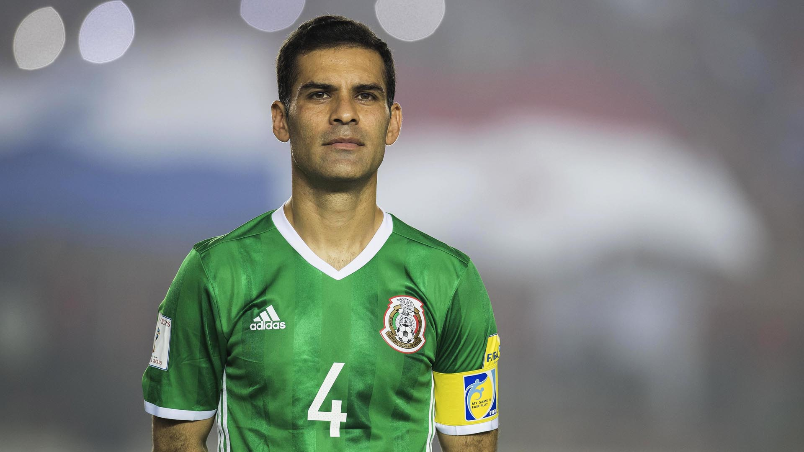

Tributo a Rafael Marquez

Es de los defensas mas duros que conozco pero al no haber jugado en Inglaterra la gente no lo
recuerda. Ve Youtube y lo veras es 10 veces mejor que Pique.
- Yaya Toure Sobre Rafa Marquez
TIMELINE
- 19 de octubre de 1996 Debutó en la Primera División de México en 1996 en la fecha 11 del
torneo Invierno 96 la noche del 19 de octubre de 1996 en el empate a 2 goles frente al equipo de los Pumas
de la UNAM
- Verano de 1999 Después de la Copa América Paraguay 1999, con 20 años, y siendo un jugador
destacado en México, Márquez fue fichado por el AS Mónaco por 6 millones de dólares
- Verano de 2003 Márquez fichó con el F. C. Barcelona por 5 millones de euros en el verano de
2003
- 17 de junio de 2018 ingresó en el segundo tiempo para asegurar la victoria de México por 1
a 0 sobre Alemania en el primer partido del Mundial, siendo esta su quinta participación mundialista.
Convirtiéndose en el tercer jugador junto a Antonio Carbajal y a Lothar Matthaus en disputar 5 Mundiales